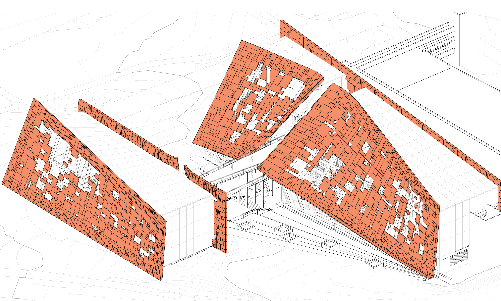
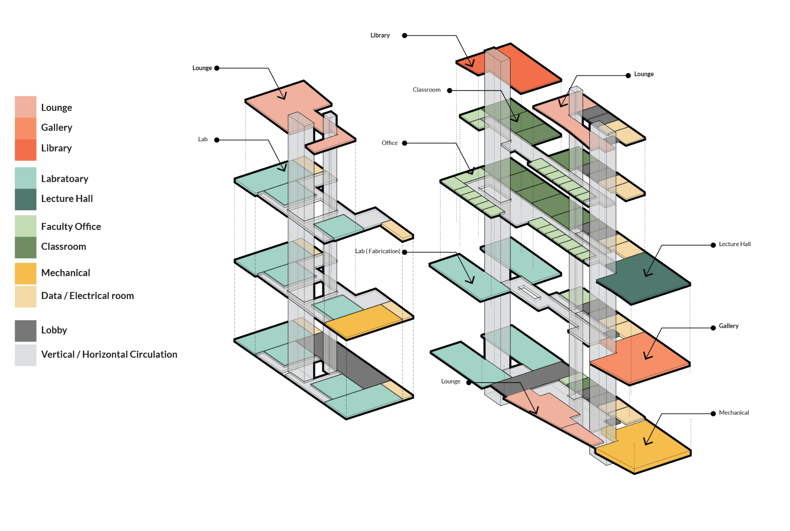

Connected To...
- UNC Charlotte
Fall 2022
Team: Hanieh Sotudeh, Turad Garba
Semester-long
Instructor: David Harrison
Role: 3D Modeling, Rendering, Ideation
The new multidisciplinary research center, which will be built on the main campus of the University of North Carolina at Charlotte, will provide an excellent opportunity to recognize, promote, and emphasize the importance of a wide range of connections. While the building program and space planning will have an effect on the network of people, space, and various majors in order to expand and maintain the connection between humans, nature, future generaons, and space, the design of the research lab will place a strong emphasis on the incorporation of environmentally friendly elements in order to reduce the carbon footprint and provide a healthier environment for students, faculty and general public.

Massing & Strategies
Site and Setback
There is 20 ft setback from site border. Based on the site’s existing vegetation, one third of the parking deck will be demolished to preserve the existing trees in the site.
Parking Deck Demolition
One Third of the parking deck is around 47472 square foot of parking deck.
The Overall Mass Height Code Requirement and Exceptation
Based on the building code, while the building code is 40 ft. One foot from the property line allows for two feet in height above 40 ft.
Connection Between Site And Botanical Garden
To preserve the connection between the massing, and parking deck toward the botanical garden, the main massing has been cut to highlight the main entrance and circulation in the building.
Vegetation Preservation
To preserve the Trees on the edge of the university city Blvd, massing got cut from the front side. This setback will help preserving at least four oak trees in that area. Each Oak tree can store as high as 48 pounds of carbon dioxide every year.
Rotation and View
Rotating the mass form 0 degree to 50 degree will allow more solar exposure and more surface area for photovoltaic panels.
Connected To
To preserve connection between different spaces and creating a path around site to enhance the connection between individuals and nature, two bridge are connecting the massings.
Final Massing Concept
To enhance the area square footage for more photovoltaic panels the facade is offset to embrace the buildings.
Program Distribution
Section Perspective

Focus Area
Design for Equitable Community To connect Users
Facade Opening is based on an attractor point in front of the community spaces to enhance connection between different groups of people from different majors to nature and create these moments of all sorts of connection.

Design for Water